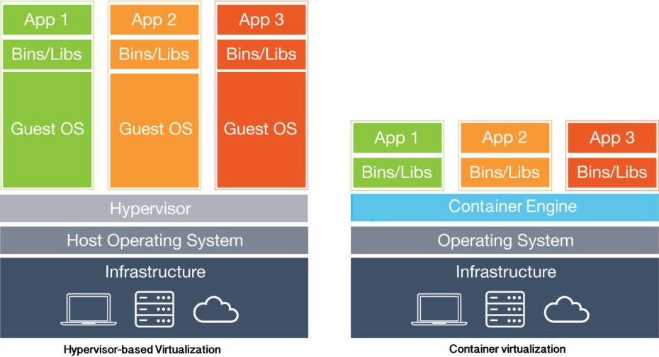

Docker and Virtualization at first one might say they are very similar however they have some major differences. One major difference is in the basic architecture of the two, for instance containers are hosted on a single physical server and are suitable for running multiple applications over an operating system (OS) kernel. The containers share operating system’s resources such as libraries and reduces the need to reproduce redundant libraries and allows a server to run multiple workloads without having a separate operating system for each load. This helps containers be very lightweight as they do not need to hold redundant libraries that the host OS already has.
Virtual machines (VMs) on the other hand have a host OS and an individual guest OS inside each VM. The guest OS can be completely different from the host OS, for instance a Windows 10 computer can have a running virtualized instance of Ubuntu which has its own libraries and can operate independently and isolated from the host OS. Since the guest OS is isolated, it does not share libraries with the host OS which greatly increase its size and resource consumption.
Another difference containers have that distinguishes them from VMs is that they have access to kernel subsystems. While containers have access to kernel subsystems, they should not have root access. The reason for this is that if they had root access and were compromised, the entire host OS they are running on would be compromised as well which is a huge security risk. VMs on the other hand are their own instances and can provide root access to their applications. Since the VMs are isolated, if they were compromised the root access is limited to the single instance and not the whole system which greatly increases security.
The next major difference between the two is portability. Containers are self-contained packages that can run the required applications and as mentioned above they also have a lightweight architecture. This allows them to be easily ported over multiple platforms. Since applications need to be tested across multiple platforms, this makes them ideal for developmental purposes. Conversely, VMs are isolated server instances with their own OS. They are less able to be ported over multiple platforms since compatibility issues may arise.
In conclusion, containers and VMs have several distinct differences. VMs focus more on security, isolation and can substantially take up more system resources. While containers are lightweight, resource usage varies in relation to load sizes and use less resources than VMs. It may seem like containers are superior to VMs however, the two in actuality excel in their own distinct usages. Containers shine for development purposes while VMs ensure full isolation, security and management of a variety of operating systems. All in all, both concepts have their pros and cons but are very useful and could actually be used together.
